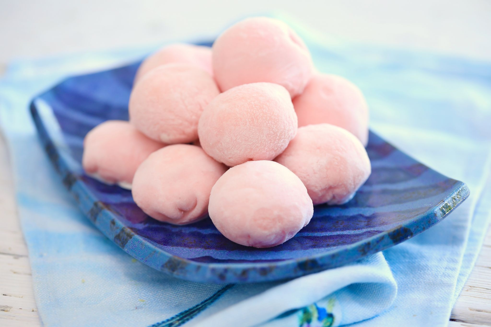
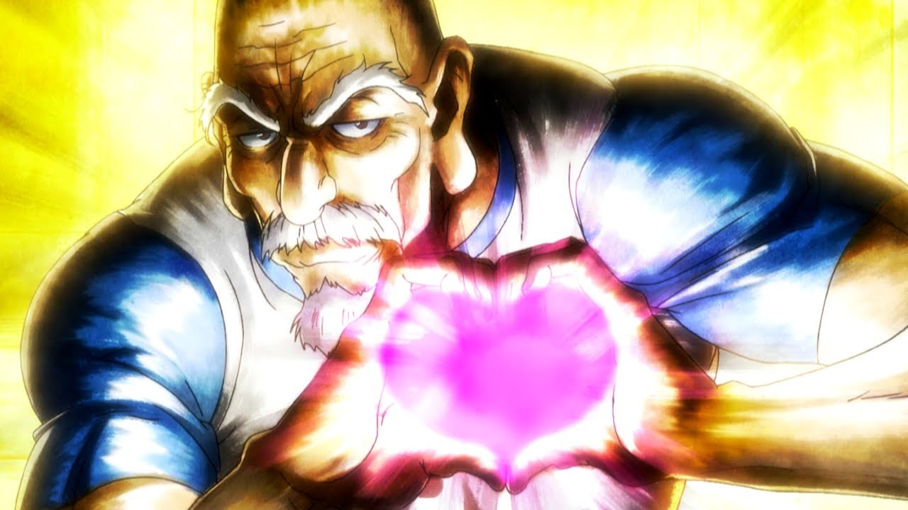

main page
Sup yall today we got a good mochi recipe prolly best mochi recipe u can find on the internet so lets get into it


mochi is counted as a desert where its obviously not ur main dish but its a nice food to eat after main dish very light and nice
it comes with variety of colors and types so u could really make it however you want and the thing about it it doesn't take that much time to make
So as for ingredients for the recipe
1 cup sweetened red bean paste/
1 cup glutinous rice flour/
1 teaspoon green tea powder (matcha)/
1 cup water/
¼ cup white sugar/
½ cup cornstarch, for rolling out the dough
as for the time it takes around 30 min of preparation time
around 5 min time to cook /
with an additional 1 hour to be fully ready/
so overall you could say it take around 1h35min to be fully ready to eat
So now the the most important step how to make mochi after you have all ingredients ready
Step 1
Gather all ingredients
Step 2
Wrap red bean paste in aluminum foil and place in the freezer until solid, at least 1 hour.
Step 3
Mix glutinous rice flour and green tea powder thoroughly in a microwave-safe bowl.
Step 4
Stir in water, then sugar; mix until smooth.
Step 5
Cover the bowl with plastic wrap and microwave for 3 minutes 30 seconds.
Step 6
Meanwhile, remove red bean paste from the freezer and divide into 8 equal balls. Set aside.
Step 7
Remove rice flour mixture from the microwave. Stir and heat, covered, for another 15 to 30 seconds.
Step 8
Dust a work surface with cornstarch. Roll about 2 tablespoons of hot rice flour mixture into a ball.
Flatten the ball and place one ball of frozen red bean paste in the center. Pinch and press the dough around the bean paste until completely covered.
Step 9
Sprinkle with additional cornstarch and place mochi, seam-side down, in a paper muffin liner to prevent sticking.
Step 10
Repeat Step 6 to make remaining mochi.
Step 11
Enjoy :)

main page